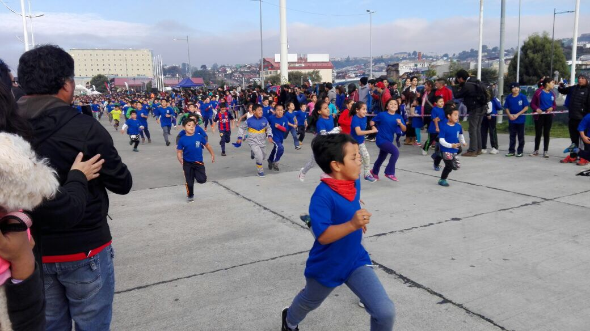

<!DOCTYPE html>
<html lang="en"></html>
<head>
  <meta charset="UTF-8"/>
  <title>Escuela Libertad Puerto Montt</title>
  <link rel="stylesheet" href="../css/noticia.css"/>
</head>
<body>
  <div class="banner1"></div>
  <div class="banner2"></div>
  <section id="nav_cero">
    <div class="box_one">
      <h1>Escuela <span>Libertad</span></h1>
    </div>
    <div class="box_two">
      <nav>
        <ul>
          <li><a href="/index.html">Home</a></li>
        </ul>
        <ul>
          <li><a href="/historia.html"><span>Historia</span></a></li>
        </ul>
        <ul>
          <li><a href="/integracion.html">Integracion</a></li>
        </ul>
        <ul>
          <li><a href="/planespropios.html"><span>Talleres</span></a></li>
        </ul>
        <ul>
          <li><a href="/ProyectoEducativo.html">PEI</a></li>
        </ul>
      </nav>
    </div>
  </section>
  <div class="wrap">
    <h3>8 de Abril de 2017</h3>
    <div class="cabenoticia">
      <h1>CORRIDA EN CIUDAD DE PUERTO MONTT</h1>
    </div>
    <div class="noticiacero"></div>
    <div class="cab__noticia">
      <h1>Fin de semana de Maraton</h1>
    </div>
    <div class="noticiauno">
      <p>PUERTO MONTT .- Más de cincuenta de nuestros estudiantes, de kínder a octavo básico, participaron en la corrida por la Educación Municipal, efectuada el día 8 de Abril en el Campo de Marte, sector costanera de nuestra ciudad. <br>Desde las 8:30 de la mañana los estudiantes, acompañados de sus padres, comenzaron a llegar al establecimiento para ser trasladados por buses municipales al lugar del evento.<br>Estando en el lugar de encuentro, niños y niñas de diversos establecimientos pudieron hacer un precalentamiento a través de un baile entretenido, y recibir sus ansiadas poleras de competencia. <br>Además de asistir junto a sus apoderados, nuestros estudiantes fueron acompañados por varios funcionarios del establecimiento, entre ellos Alicia Mansilla, Marie León, Miguel Ángel Decouvieres, Claudio Rodríguez, y Rodrigo Silva, quien guió a nuestros alumnos sordos.<br>La participación de nuestros estudiantes fue positiva, siendo ellos los más contentos por poder participar del evento y compartir con sus pares de otros establecimientos.</p>
      <div class="box__fotografia_face"><div class="fb-post" data-href="https://www.facebook.com/media/set/?set=a.238143750010401.1073741860.100014443334294&amp;type=1&amp;l=d8195ca635" data-width="500" data-show-text="true"><blockquote cite="https://www.facebook.com/media/set/?set=a.238143750010401.1073741860.100014443334294&amp;type=3" class="fb-xfbml-parse-ignore">Posted by <a href="https://www.facebook.com/esc.libertad.39">Esc Libertad</a> on&nbsp;<a href="https://www.facebook.com/media/set/?set=a.238143750010401.1073741860.100014443334294&amp;type=3">jueves, 6 de julio de 2017</a></blockquote></div></div>
    </div>
    <div class="box__comentario"><!-- Script de Comentario-->
<script>(function(d, s, id) {var js, fjs = d.getElementsByTagName(s)[0];if (d.getElementById(id)) return;js = d.createElement(s); js.id = id;js.src = "//connect.facebook.net/es_ES/sdk.js#xfbml=1&version=v2.9";fjs.parentNode.insertBefore(js, fjs);}(document, 'script', 'facebook-jssdk'));</script><div class="fb-comments"data-href="http://127.0.0.1:49444/index.html" data-width="100%" data-numposts="5"></div><div id="fb-root"></div>
    </div>
    <footer>
      <div class="direccion"><span class="icon-compass"></span>
        <h1>Dirección: Iquique 230, Poblacion Libertad - Puerto Montt</h1>
      </div>
      <div class="telefono"><span class="icon-phone"></span>
        <h1>Telefono : 65 2 484525</h1>
      </div>
      <div class="mail"><span class="icon-inbox"></span>
        <h1>libertad@escuelas.dempuertomontt.cl</h1>
      </div>
      <div class="face"><a href="https://www.facebook.com/esc.libertad.39"><span class="icon-facebook-official"></span></a></div><span class="icon-youtube-square"></span>
    </footer>
  </div>
</body>